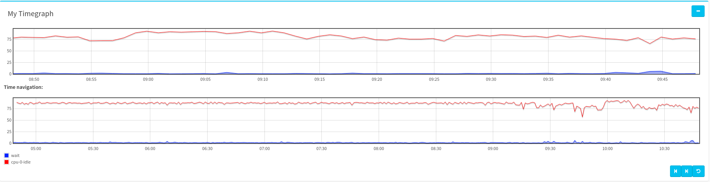
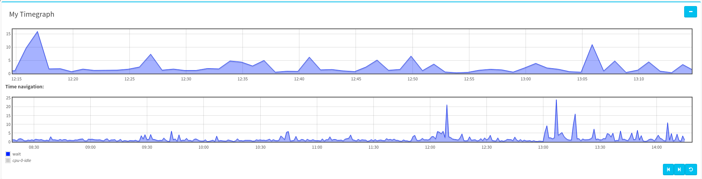
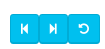

How to use TimeGraph¶
This document describes how to insert and configure a TimeGraph widget.
The first step is to create some series and/or curves.
Configuring the widget¶
General aspect¶
Insert a timegraph widget to begin with:
The following form will appear:

Detailed options:
- Title: your widget’s title ;
- Widget refresh interval: interval between two chart updates ;
- Human readable values: if checked, will truncate
1000to1K, etc. ;- Show legend: if checked, will show a legend bellow the chart ;
- Show tooltips: if checked, will show a tooltip box when a point is hovered.
This configure the general aspect of the chart.
Configure data sources¶
You can use two types of data source :
- serie: it will plot a pre-configured serie (see how to create a serie) ;
- metric: it will plot a single metric.
Click on the Series tab:
Detailed options:
- Add: this button add a new stylized serie to the widget ;
- Serie: choose the serie to plot ;
- Curves: choose the type of curve to use for plotting ;
- Serie’s color: choose the curve’s color ;
- X / Y: choose the axes (to use different scales on the same chart).
Then, click on the Metrics tab:
Detailed options (very similar to series):
- Add: this button add a new stylized metric to the widget ;
- Metric: choose the metric to plot ;
- Curve: choose the type of curve to use for plotting ;
- Metric’s unit: if not provided by the metric, choose its unit (%, o, B, ...) ;
- Metric’s color: choose the curve’s color ;
- X / Y: choose the axes (to use different scales on the same chart).
Now you can save changes, and see the result.
Using the widget¶
Visualization¶
Here, the first chart shows data using the configured time-window, and the second one shows data using the configured history time-window.
You can select a range on one of those two charts, it will reconfigure the time-window on the first chart:
Then, you can click on a serie in the legend, to hide/unhide it:
If you hover a point with the mouse, and have the tooltip option enabled, a small tooltip box will appears:
Actions¶
On the right-bottom corner of the widget, you will find 3 buttons (only one if time navigation is disabled):
Detailed actions:
- shift time-window of first chart to the past (use the configured step duration) ;
- shift time-window to the future ;
- Reset time-window to its defaults, and restart widget refreshing.
NB: Every action modifying the time-window (action buttons, or selection) will prevent the widget from refreshing, the reset button restarts it.